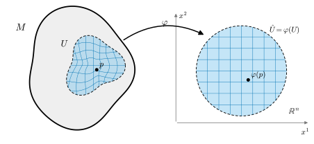
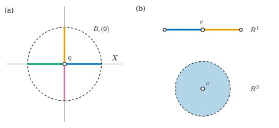

11.1 위상다양체
이 절의 목표
- 국소 유클리드 공간과 위상다양체를 정의하고, 정의의 세 조건이 각각 무엇을 막는지 비예로 설명할 수 있다.
- \(\R^n\)의 열린집합, 그래프, 구면 \(S^n\), \(\RP^n\), 토러스 \(T^n\)이 위상다양체임을 3장의 결과로 보일 수 있다.
- 차트와 좌표함수를 정의하고, 위상다양체가 폐포가 컴팩트한 좌표공들로 이루어진 가산 기저를 가짐을 증명할 수 있다.
선수 지식
동기
3장에서 실사영공간 \(\RP^n\)에 대해 세 가지를 증명했다. 모든 점이 \(\R^n\)과 위상동형인 근방을 가지고(명제 3.4.15), 하우스도르프이며(명제 3.5.7), 제2가산이다(명제 3.5.11). 3장은 이 세 성질을 모은 것을 “위상다양체”라 부르겠다고 예고했다. 이 절에서 그 약속을 지킨다. 이 절에서 \(X \cong Y\)는 3장에서처럼 위상동형(정의 3.2.12)을 뜻한다.
왜 이런 개념이 필요한가? 6장의 정칙곡면은 처음부터 \(\R^3\)의 부분집합이다(정의 6.1.1). 그런데 \(\RP^n\)은 어떤 \(\R^N\)의 부분집합으로 만들지 않았다. \(\RP^n\)의 점은 \(\R^{n+1}\)의 직선이고, 우리는 그 집합에 몫위상을 주었을 뿐이다. 9장 끝의 쌍곡평면 \(\mathbb{U}^2\)도 둘러싼 공간 없이 계량만으로 주어진다. 그렇다면 “곡면 같은 공간”을 둘러싼 공간 없이, 공간 자신의 성질만으로 정의할 수 있을까? 답의 핵심은 국소적으로 \(\R^n\)처럼 생겼다는 성질이다. 이 절은 그 성질을 정확히 하고, 여기에 두 가지 조건을 더해 위상다양체를 정의한다.

국소 유클리드 공간
정의 11.1.1 (국소 유클리드, locally Euclidean). \(n \ge 0\)이 정수이고 \(X\)가 위상공간이라 하자. \(X\)의 모든 점 \(p\)에 대하여 \(p\)의 근방 \(U\)와 \(\R^n\)의 열린집합 \(\hat U\), 그리고 위상동형사상 \(\varphi\colon U \to \hat U\)가 존재하면, \(X\)를 \(n\)차원 국소 유클리드(locally Euclidean) 공간이라 한다.
여기서 근방은 정의 3.1.11대로 \(p\)를 포함하는 열린집합이고, \(U\)에는 부분공간 위상을 준다. \(\R^0 = \{0\}\)은 한 점이다. \(\hat U\)를 열린공이나 \(\R^n\) 전체로 바꾸어도 같은 개념이 된다.
보조정리 11.1.2. 위상공간 \(X\)와 점 \(p \in X\)에 대하여 다음 세 조건은 동치다. (a) \(p\)의 근방 중에 \(\R^n\)의 열린집합과 위상동형인 것이 있다. (b) \(p\)의 근방 중에 \(\R^n\)의 열린공과 위상동형인 것이 있다. (c) \(p\)의 근방 중에 \(\R^n\)과 위상동형인 것이 있다.
증명. (c) \(\Rightarrow\) (a)는 \(\R^n\)이 \(\R^n\)의 열린집합이기 때문이다. (b) \(\Rightarrow\) (c): 예 3.2.14(a), (b)에 의해 \(\R^n\)의 모든 열린공은 \(\R^n\)과 위상동형이므로, 열린공과 위상동형인 근방은 \(\R^n\)과 위상동형이다(위상동형사상의 합성, 명제 3.2.4). (a) \(\Rightarrow\) (b): \(\varphi\colon U \to \hat U\)가 위상동형사상이고 \(\hat U\)가 열려 있으면, \(\varphi(p)\)를 중심으로 하는 공 \(B = B_r(\varphi(p)) \subseteq \hat U\)가 있다. \(B\)는 \(\hat U\)에서 열려 있으므로 \(W = \varphi^{-1}(B)\)는 \(U\)에서 열려 있고, \(U\)가 \(X\)에서 열려 있으므로 \(X\)에서도 열려 있다(명제 3.3.4(b)). \(\varphi\)를 \(W\)로 제한한 \(\varphi|_W\colon W \to B\)는 연속 전단사이고, 역사상 \(\varphi^{-1}|_B\)도 연속이다(정리 3.3.5(b), (c)). 따라서 \(W\)는 열린공 \(B\)와 위상동형인 \(p\)의 근방이다.
“국소 유클리드”만으로는 좋은 공간을 보장하지 못한다. 3.5절에서 본 원점이 두 개인 직선과 \(\R \times \R_{\text{이산}}\)은 둘 다 1차원 국소 유클리드 공간이다(비예 11.1.10). 앞의 것은 두 점을 근방으로 떼어 놓을 수 없고, 뒤의 것은 열린집합이 “너무 많다”. 그래서 다음 정의는 두 조건을 명시적으로 더한다.
위상다양체
정의 11.1.3 (위상다양체, topological manifold). \(n \ge 0\)이 정수라 하자. 위상공간 \(M\)이 다음 세 조건을 만족하면 \(M\)을 \(n\)차원 위상다양체(topological manifold)라 하고, 줄여서 위상 \(n\)-다양체라 한다.
- (i) \(M\)은 하우스도르프 공간이다(정의 3.5.1).
- (ii) \(M\)은 제2가산 공간이다(정의 3.5.8).
- (iii) \(M\)은 \(n\)차원 국소 유클리드 공간이다(정의 11.1.1).
차원을 밝힐 때는 \(M^n\)으로 쓴다.
세 조건은 모두 위상동형사상으로 옮겨 간다. \(h\colon M \to M'\)이 위상동형사상이면 서로소인 근방, 가산 기저, \(\R^n\)의 열린집합과 위상동형인 근방이 \(h\)에 의해 그대로 \(M'\)의 것이 되기 때문이다. 따라서 위상다양체와 위상동형인 공간은 같은 차원의 위상다양체다. 한 공간이 서로 다른 두 차원의 위상다양체일 수 없다는 사실은 뒤의 정리 11.1.12에서 다룬다.
예 11.1.4 (\(\R^n\)과 그 열린집합). \(\R^n\)은 위상 \(n\)-다양체다. 거리공간이므로 하우스도르프이고(예 3.5.2(a)), 제2가산이며(명제 3.5.9), 모든 점의 근방으로 \(\R^n\) 자신과 항등사상을 쓸 수 있다. 같은 이유로 \(\R^n\)의 모든 열린집합 \(W\)는 위상 \(n\)-다양체다. 하우스도르프와 제2가산은 부분공간으로 물려받고(명제 3.5.5, 명제 3.5.10), \(W\) 자신이 \(\R^n\)의 열린집합이므로 항등사상 \(\id_W\)가 정의 11.1.1의 위상동형사상이다. \(n = 0\)이면 \(\R^0\)은 한 점이다. 0차원 위상다양체는 정확히 가산 이산공간이다(연습 11.1.1).
다양체에서 새 다양체를 만드는 가장 간단한 두 방법이 열린부분집합과 곱이다.
명제 11.1.5 (열린부분집합과 곱).
- (a) \(M\)이 위상 \(n\)-다양체이고 \(W \subseteq M\)이 열린집합이면, 부분공간 \(W\)는 위상 \(n\)-다양체다.
- (b) \(M\)이 위상 \(m\)-다양체이고 \(N\)이 위상 \(n\)-다양체이면, 곱공간 \(M \times N\)은 위상 \((m + n)\)-다양체다.
증명. (a) 하우스도르프와 제2가산은 부분공간으로 물려받는다(명제 3.5.5, 명제 3.5.10). \(p \in W\)이면 \(M\)에서 \(p\)의 근방 \(U\)와 위상동형사상 \(\varphi\colon U \to \hat U\)(\(\hat U \subseteq \R^n\) 열림)가 있다. \(U \cap W\)는 \(M\)에서 열려 있고 \(p\)를 포함한다. \(U \cap W\)는 \(U\)에서 열려 있으므로 \(\varphi(U \cap W)\)는 \(\hat U\)에서 열려 있고(위상동형사상은 열린사상), \(\hat U\)가 \(\R^n\)에서 열려 있으므로 \(\R^n\)에서도 열려 있다(명제 3.3.4(b)). 제한 \(\varphi|_{U \cap W}\colon U \cap W \to \varphi(U \cap W)\)는 위상동형사상이다(정리 3.3.5). 또 \(U \cap W\)는 \(W\)에서도 열려 있으므로 \(W\) 안에서 \(p\)의 근방이다.
(b) 하우스도르프와 제2가산은 곱으로 물려받는다(같은 두 명제). \((p, q) \in M \times N\)이면 위상동형사상 \(\varphi\colon U \to \hat U \subseteq \R^m\), \(\psi\colon V \to \hat V \subseteq \R^n\)이 있다(\(U \ni p\), \(V \ni q\)는 근방). \(U \times V\)는 곱위상에서 열린 상자이고, 그 부분공간 위상은 \(U\)와 \(V\)의 곱위상과 같다(명제 3.3.16). \(\varphi \times \psi\colon U \times V \to \hat U \times \hat V\), \((x, y) \mapsto (\varphi(x), \psi(y))\)는 전단사이고, 성분 \(\varphi \circ \pi_U\)와 \(\psi \circ \pi_V\)가 연속이므로 연속이다(정리 3.3.15). 같은 이유로 역사상 \(\varphi^{-1} \times \psi^{-1}\)도 연속이다. \(\hat U \times \hat V\)는 \(\R^m \times \R^n = \R^{m+n}\)(예 3.3.13)의 열린 상자이므로 \(\R^{m+n}\)의 열린집합이다.
예 11.1.6 (구면 \(S^n\)). \(n \ge 1\)이라 하자. 단위구면 \(S^n = \{x \in \R^{n+1} : \abs{x} = 1\}\)은 \(\R^{n+1}\)의 부분공간이므로 하우스도르프이고 제2가산이다(명제 3.5.5, 명제 3.5.10). 북극 \(N = (0, \dots, 0, 1)\)을 뺀 \(S^n \setminus \{N\}\)은 입체사영 \(\sigma\)에 의해 \(\R^n\)과 위상동형이다(예 3.2.14(c)). 남극 \(S = -N\) 근처의 점을 다루려고 대척사상 \(a(x) = -x\)를 쓴다. \(a\)는 \(S^n\)의 위상동형사상이고(자기 자신이 역사상이며 성분이 일차식) \(S^n \setminus \{S\}\)를 \(S^n \setminus \{N\}\)으로 보낸다. \(\R^n\)에서 \(u \mapsto -u\)도 위상동형사상이므로, 합성 \(\tilde\sigma = (-\id) \circ \sigma \circ a\colon S^n \setminus \{S\} \to \R^n\)은 위상동형사상이다(명제 3.2.4). \(x = (x', x^{n+1})\), \(x' = (x^1, \dots, x^n)\)으로 쓰고 (3.2.4)에 넣으면
이다. 이것이 이 study set의 기준 예제에서 쓰는 남극 입체사영이다(기호표). \(N \ne S\)이므로 \(S^n \setminus \{N\}\)과 \(S^n \setminus \{S\}\)는 \(S^n\)을 덮고, 각각 \(S^n\)에서 열려 있다(한 점은 닫혀 있다, 명제 3.5.4(a)). 따라서 \(S^n\)은 위상 \(n\)-다양체다. \(n = 0\)이면 \(S^0 = \{-1, 1\}\)은 두 점으로 된 이산공간이고, 0차원 위상다양체다.
검증: verify/v-11-1-topological-manifolds.py
예 11.1.7 (실사영공간 \(\RP^n\)). \(\RP^n\)은 위상 \(n\)-다양체다. 세 조건이 모두 3장에서 증명되었다. \(U_i = \{[x] : x^i \ne 0\}\) (\(i = 1, \dots, n+1\))은 \(\RP^n\)을 덮는 열린집합이고 \(\varphi_i\colon U_i \to \R^n\)은 위상동형사상이다(명제 3.4.15). \(\RP^n\)은 하우스도르프이고(명제 3.5.7) 제2가산이다(명제 3.5.11). 게다가 컴팩트하고(명제 3.6.14) 연결이다(예 3.7.10(d)). 이 예는 “둘러싼 공간 없이 만든 다양체”의 첫 예다. \(\RP^n\)의 좌표 \(\varphi_i\)들이 서로 어떻게 바뀌는지는 11.4절에서 계산한다.
예 11.1.8 (연속함수의 그래프). \(U \subseteq \R^n\)이 열린집합이고 \(f\colon U \to \R^k\)가 연속이라 하자. 그래프 \(\Gamma(f) = \{(x, f(x)) : x \in U\} \subseteq \R^{n+k}\)에 부분공간 위상을 주면 위상 \(n\)-다양체다. \(\R^{n+k}\)의 부분공간이므로 하우스도르프이고 제2가산이다. 사영 \(\pi(x, y) = x\)를 \(\Gamma(f)\)로 제한한 \(\pi\colon \Gamma(f) \to U\)는 연속이고(정리 3.3.5(b)), 역사상은
이다. 이 사상은 성분이 연속이고(명제 3.2.5) 값이 \(\Gamma(f)\)에 있으므로 연속이다(정리 3.3.5(c)). 따라서 \(\pi\)는 \(\Gamma(f)\) 전체에서 열린집합 \(U\)로 가는 위상동형사상이다. \(f\)는 연속이기만 하면 된다는 데 주의하자. 예를 들어 원뿔 \(z = \sqrt{x^2 + y^2}\)은 꼭짓점에서 뾰족하지만 위상 2-다양체다(연습 11.1.2). “위상다양체”는 매끄러움에 대해 아무것도 말하지 않는다.
예 11.1.9 (토러스 \(T^n\)과 원기둥). \(S^1\)은 위상 1-다양체이므로(예 11.1.6), 명제 11.1.5(b)를 되풀이해 쓰면 \(T^n = S^1 \times \dots \times S^1\) (\(n\)개)은 위상 \(n\)-다양체다. 여기서 \(T^n = T^{n-1} \times S^1\)으로 보는데, 이 곱위상과 \(n\)개의 곱위상은 둘 다 \(T^n\)을 \(\R^{2n}\)의 부분공간으로 본 위상과 같다(명제 3.3.16, 예 3.3.13). 특히 토러스 \(T^2 = S^1 \times S^1\)은 위상 2-다양체이고, \(\R^3\)의 원환면 \(T_{R,r}\)(기준 매개화 \(\mathbf{x}\)의 상)은 \(T^2\)와 위상동형이므로(예 3.3.17) 역시 위상 2-다양체다. 같은 방법으로 원기둥 \(S^1 \times \R\)은 위상 2-다양체다.
조건 하나씩 빼기: 비예
정의 11.1.3의 세 조건은 서로 독립이다. 즉 어느 둘을 만족해도 나머지 하나가 성립하지 않을 수 있다. 3.5절의 두 공간이 앞의 두 경우이고, 셋째 경우는 새로 만든다.
비예 11.1.10 (하우스도르프 조건이나 제2가산 조건이 빠진 경우).
- (a) 원점이 두 개인 직선 \(L\)(비예 3.5.6)은 1차원 국소 유클리드이고 제2가산이지만 하우스도르프가 아니다. 3.5절에서 \(L\)이 두 열린집합 \(V_1, V_2\)로 덮이고 각각 \(\R\)과 위상동형임을 보였으므로 국소 유클리드다. 제2가산임을 보이자. \(V_k\)는 \(\R\)과 위상동형이므로 가산 기저 \(\mathcal{B}_k\)를 가진다. \(W \subseteq L\)이 열려 있고 \(p \in W\)이면 \(p \in V_k\)인 \(k\)가 있고, \(W \cap V_k\)는 \(V_k\)에서 열려 있으므로 \(p \in B \subseteq W \cap V_k\)인 \(B \in \mathcal{B}_k\)가 있다. \(V_k\)가 \(L\)에서 열려 있으므로 \(B\)도 \(L\)에서 열려 있다(명제 3.3.4(b)). 따라서 가산 모임 \(\mathcal{B}_1 \cup \mathcal{B}_2\)는 \(L\)의 기저다(명제 3.1.21).
- (b) \(\R \times \R_{\text{이산}}\)(비예 3.5.12(b))은 1차원 국소 유클리드이고 하우스도르프이지만 제2가산이 아니다. 각 점 \((x, y)\)는 열린집합 \(\R \times \{y\}\)에 들어 있고, 이 집합은 \((t, y) \mapsto t\)에 의해 \(\R\)과 위상동형이다.
비예 11.1.11 (국소 유클리드 조건이 빠진 경우: 십자 모양). 두 좌표축의 합집합 \(X = \{(x, y) \in \R^2 : xy = 0\}\)은 \(\R^2\)의 부분공간이므로 하우스도르프이고 제2가산이다. 그러나 어떤 \(n\)에 대해서도 \(n\)차원 국소 유클리드가 아니다. 원점 \(0\)의 근방 \(W\)와 위상동형사상 \(h\colon W \to \hat W\) (\(\hat W \subseteq \R^n\) 열림)가 있다고 가정하고 모순을 이끌어 내자.
- 원점 근처의 모양. \(X\)에서 원점을 빼면 서로소인 네 반직선 \(R_1 = \{(t, 0) : t \gt 0\}\), \(R_2 = \{(0, t) : t \gt 0\}\), \(R_3 = \{(t, 0) : t \lt 0\}\), \(R_4 = \{(0, t) : t \lt 0\}\)이 남는다. \(R_1 = X \cap \{x \gt 0\}\)처럼 각 \(R_j\)는 \(X\)의 열린집합이다. 또 원점을 포함하는 \(X\)의 열린집합 \(V\)는 어떤 \(\varepsilon \gt 0\)에 대해 \(X \cap B_\varepsilon(0)\)을 포함하므로, 네 집합 \(V \cap R_j\)는 모두 공집합이 아니다.
- 작은 공으로 줄이기. \(n = 0\)이면 \(\hat W\)는 한 점이므로 \(W = \{0\}\)이 \(X\)에서 열려 있어야 하는데, 방금 본 것처럼 원점을 포함하는 열린집합은 \(R_1\)의 점도 포함한다. 그래서 \(n \ge 1\)이다. \(c = h(0)\)을 중심으로 하는 공 \(B = B_\delta(c) \subseteq \hat W\)를 잡고 \(V = h^{-1}(B)\)라 하자. 보조정리 11.1.2의 증명처럼 \(V\)는 원점을 포함하는 \(X\)의 열린집합이고, \(h\)는 위상동형사상 \(V \setminus \{0\} \to B \setminus \{c\}\)로 제한된다. \(V \setminus \{0\}\)은 공집합이 아니고 서로소인 네 열린집합 \(V \cap R_j\)의 합집합이다(그림 11.1.2(a)).
- \(n \ge 2\)인 경우. \(B \setminus \{c\}\)는 경로연결이다. 두 점 \(p, q\)를 잇는 선분이 \(c\)를 지나면, \(p, q, c\)를 지나는 직선 밖의 점 \(r \in B\)를 골라 선분 \([p, r]\)과 \([r, q]\)를 잇는다. \(B\)는 볼록하므로 두 선분은 \(B\) 안에 있고, \(c\)를 지나지 않는다(예 3.7.10(b)와 같은 논증). 따라서 \(B \setminus \{c\}\)는 연결이다(명제 3.7.9). 그런데 \(V \cap R_1\)과 나머지 셋의 합집합은 \(V \setminus \{0\}\)의 분리이므로 \(V \setminus \{0\}\)은 연결이 아니다. 연결성은 위상동형사상으로 보존되므로(명제 3.7.5) 모순이다.
- \(n = 1\)인 경우. \(B \setminus \{c\} = (c - \delta, c) \cup (c, c + \delta)\)는 두 열린구간의 합집합이다. 네 집합 \(h(V \cap R_j)\)는 공집합이 아니고 서로소이며 열려 있고 합집합이 \(B \setminus \{c\}\)다. 구간 \(I = (c - \delta, c)\)는 연결이므로(정리 3.7.4) 네 열린집합 \(I \cap h(V \cap R_j)\) 가운데 하나만 공집합이 아니다. 즉 \(I\)는 네 집합 중 하나에 통째로 들어간다. \((c, c + \delta)\)도 마찬가지다. 그러면 네 집합 중 많아야 두 개만 공집합이 아니게 되어 모순이다(그림 11.1.2(b)).
따라서 \(X\)는 원점에서 국소 유클리드가 아니고, 위상다양체가 아니다. 원점을 뺀 \(X \setminus \{0\}\)은 네 개의 열린 반직선이므로 위상 1-다양체다.
검증: verify/v-11-1-topological-manifolds.py (우회 경로의 수치 확인)

지금까지의 예와 비예를 정리하면 다음과 같다.
| 공간 | 국소 유클리드 | 하우스도르프 | 제2가산 | 위상다양체 |
|---|---|---|---|---|
| \(\R^n\), \(S^n\), \(\RP^n\), \(T^n\), 그래프 | 예 | 예 | 예 | 예 |
| 원점이 두 개인 직선 | 예 | 아니오 | 예 | 아니오 |
| \(\R \times \R_{\text{이산}}\) | 예 | 예 | 아니오 | 아니오 |
| 십자 \(X = \{xy = 0\}\) | 아니오 | 예 | 예 | 아니오 |
차원은 하나로 정해지는가
정의 11.1.3은 차원 \(n\)을 미리 정해 두고 조건을 건다. 그러면 한 공간이 3차원 다양체이면서 동시에 5차원 다양체일 수 있을까? 그럴 수 없다는 것이 다음 정리다.
정리 11.1.12 (위상적 차원 불변성, topological invariance of dimension). \(\R^m\)의 공집합이 아닌 열린집합과 \(\R^n\)의 공집합이 아닌 열린집합이 위상동형이면 \(m = n\)이다. 따라서 공집합이 아닌 위상공간이 위상 \(m\)-다양체이면서 위상 \(n\)-다양체이면 \(m = n\)이다.
이 정리가 말하는 것. 공집합이 아닌 위상다양체의 차원은 공간 자신이 정한다. 그래서 “\(M\)의 차원” \(\dim M\)이라는 말을 쓸 수 있다.
증명에 대하여. 첫 문장의 증명에는 호몰로지 같은 대수적 위상수학의 도구가 필요하다. 이 도구는 이 study set이 다루는 범위를 넘으므로 진술만 하고 증명은 참고문헌으로 돌린다 [Lee-ITM], [Lee-ISM 1장]. 3장은 \(m = 1\)인 경우의 한 형태인 \(\R \not\cong \R^n\) (\(n \ge 2\))만 연결성으로 증명했다(예 3.7.17과 그 뒤의 주의). 둘째 문장은 첫 문장에서 나온다. \(p \in M\)의 근방 \(U \cong \hat U \subseteq \R^m\)과 \(V \cong \hat V \subseteq \R^n\)이 있으면, \(U \cap V\)는 \(p\)의 근방이고 두 위상동형사상에 의한 그 상은 각각 \(\R^m\)과 \(\R^n\)의 공집합이 아닌 열린집합이며(명제 11.1.5(a)의 증명) 서로 위상동형이다. 11.2절에서 좌표변환이 매끄러운 경우에는 이 사실을 미분만으로 간단히 증명한다.
공집합은 모든 \(n\)에 대해 \(n\)차원 위상다양체다. 조건이 모두 공허하게 참이기 때문이다. 이 예외 때문에 정리에 “공집합이 아닌”을 붙인다.
차트와 좌표
정의 11.1.1의 근방과 위상동형사상의 짝은 앞으로 계속 쓰므로 이름을 붙인다.
정의 11.1.13 (차트, chart). \(M\)이 위상 \(n\)-다양체라 하자. \(M\)의 열린집합 \(U\)와 위상동형사상 \(\varphi\colon U \to \hat U\)의 짝 \((U, \varphi)\)를 \(M\)의 차트(chart) 또는 좌표근방이라 한다. 여기서 \(\hat U = \varphi(U)\)는 \(\R^n\)의 열린집합이다. \(p \in U\)이면 \((U, \varphi)\)를 \(p\) 둘레의 차트라 한다.
정의 11.1.3의 (iii)은 “모든 점 둘레에 차트가 있다”는 말이다. \(\varphi(p)\)의 성분을 \(p\)의 좌표라 한다. 성분별로 쓰면
이다. 여기서 \(\mathrm{pr}^i\colon \R^n \to \R\)는 \(i\)번째 성분이다. 함수 \(x^1, \dots, x^n\)을 차트의 좌표함수(coordinate functions)라 하고 \(\varphi = (x^1, \dots, x^n)\)으로 쓴다. 첨자를 위에 쓰는 것은 인덱스 위치 규약(비고 1.4.9)을 따른 것이다.
\(\hat U\)가 \(\R^n\)의 열린공이면 \(U\)를 좌표공(coordinate ball)이라 한다. 보조정리 11.1.2에 의해 모든 점은 좌표공 안에 있다.
예 11.1.14 (지금까지의 차트). (a) \(\R^n\)의 열린집합 \(W\)에서 \((W, \id_W)\)는 차트이고, 좌표함수는 보통의 좌표 \(x^i(p) = p^i\)다. (b) \(S^n\)에서 \((S^n \setminus \{N\}, \sigma)\)와 \((S^n \setminus \{S\}, \tilde\sigma)\)는 차트다(예 11.1.6). (c) \(\RP^n\)에서 \((U_i, \varphi_i)\)는 차트다(예 11.1.7). 예를 들어 \(\RP^1\)의 \(\varphi_1[x^1 : x^2] = x^2/x^1\)은 직선의 기울기다(예 3.4.16). (d) 그래프 \(\Gamma(f)\)에서 \((\Gamma(f), \pi)\)는 공간 전체를 덮는 차트 하나다(예 11.1.8).
차트를 이용하면 위상다양체의 위상적 성질 몇 가지를 \(\R^n\)에서 옮겨 올 수 있다. 아래 (b)는 12장에서 단위분할을 만들 때 출발점이 된다.
명제 11.1.15 (위상다양체의 위상적 성질). \(M\)이 위상 \(n\)-다양체라 하자.
- (a) \(M\)은 국소 경로연결이다. 따라서 \(M\)의 연결성분은 경로성분과 같고 열려 있으며, \(M\)이 연결일 필요충분조건은 경로연결인 것이다. 연결성분은 가산개이고, 각각 위상 \(n\)-다양체다.
- (b) \(M\)은 폐포가 컴팩트한 좌표공들로 이루어진 가산 기저를 가진다.
증명 아이디어: 모든 것을 차트 안의 공으로 옮긴다. 공은 볼록하므로 경로연결이고, 유리수 중심·유리수 반지름의 공은 가산개이며, 닫힌공은 컴팩트하다. 하우스도르프 조건은 “컴팩트 집합은 닫혀 있다”를 쓰는 데 필요하다.
증명. (a) \(p \in M\)이고 \(O\)가 \(p\)의 근방이라 하자. \(p\) 둘레의 차트 \((U, \varphi)\)를 잡으면 \(\varphi(U \cap O)\)는 \(\varphi(p)\)를 포함하는 \(\R^n\)의 열린집합이므로(명제 11.1.5(a)의 증명) 그 안에 공 \(B\)가 있다. \(\varphi^{-1}(B)\)는 \(O\) 안에 있는 \(p\)의 근방이고, 경로연결인 \(B\)(예 3.7.10(a))의 연속상이므로 경로연결이다(명제 3.7.9). 따라서 \(M\)은 국소 경로연결이고(정의 3.7.14), 앞의 두 결론은 정리 3.7.15다. \(\mathcal{B}\)가 \(M\)의 가산 기저이면, 공집합이 아닌 열린집합인 각 연결성분 \(C\)는 어떤 원소 \(B_C \in \mathcal{B}\)를 포함한다. 연결성분들은 서로소이므로(명제 3.7.13(b)) \(C \mapsto B_C\)는 단사다. 따라서 연결성분은 가산개다. 각 연결성분은 열린집합이므로 명제 11.1.5(a)에 의해 위상 \(n\)-다양체다.
(b) 차트의 정의역들은 \(M\)의 열린덮개이고, \(M\)이 제2가산이므로 가산 부분덮개 \(\{(U_k, \varphi_k)\}_{k \ge 1}\)이 있다(명제 3.6.15). 각 \(k\)에 대하여
로 두고 \(\mathcal{B} = \bigcup_k \mathcal{B}_k\)라 하자. 각 \(I_k\)는 가산집합 \(\Q^n \times \Q\)의 부분집합이므로 \(\mathcal{B}_k\)는 가산이고, 가산개의 가산집합의 합집합인 \(\mathcal{B}\)도 가산이다. 각 원소 \(D = \varphi_k^{-1}(B_r(q))\)는 \(U_k\)에서 열려 있으므로 \(M\)에서 열려 있고, \(\varphi_k\)를 \(D\)로 제한한 차트(명제 11.1.5(a)의 증명)의 상이 열린공 \(B_r(q)\)이므로 좌표공이다.
- 기저이다. \(O \subseteq M\)이 열려 있고 \(p \in O\)라 하자. \(p \in U_k\)인 \(k\)를 잡고 \(x = \varphi_k(p)\)라 하면, \(\varphi_k(O \cap U_k)\)는 \(x\)를 포함하는 \(\R^n\)의 열린집합이므로 \(B_\varepsilon(x) \subseteq \varphi_k(O \cap U_k)\)인 \(\varepsilon \gt 0\)이 있다. \(0 \lt r \lt \varepsilon/3\)인 유리수 \(r\)과 \(\abs{q - x} \lt r\)인 유리점 \(q\)를 고른다(명제 3.5.9의 증명). 그러면 \(x \in B_r(q)\)이고, \(\abs{y - q} \le r\)이면 \(\abs{y - x} \le \abs{y - q} + \abs{q - x} \lt 2r \lt \varepsilon\)이므로 \(\overline{B}_r(q) \subseteq B_\varepsilon(x) \subseteq \varphi_k(O \cap U_k)\)이다. 따라서 \(\varphi_k^{-1}(B_r(q)) \in \mathcal{B}_k\)이고 \(p \in \varphi_k^{-1}(B_r(q)) \subseteq O\)이다. 명제 3.1.21에 의해 \(\mathcal{B}\)는 기저다.
- 폐포가 컴팩트하다. \(D = \varphi_k^{-1}(B_r(q)) \in \mathcal{B}_k\)라 하자. 닫힌공 \(\overline{B}_r(q)\)는 컴팩트하고(예 3.6.8(a)) \(\varphi_k(U_k)\) 안에 있으므로, \(K = \varphi_k^{-1}(\overline{B}_r(q))\)는 연속사상 \(\varphi_k^{-1}\)에 의한 컴팩트 집합의 상으로서 컴팩트하다(명제 3.6.5(c)). \(M\)이 하우스도르프이므로 \(K\)는 \(M\)에서 닫혀 있다(명제 3.6.5(b)). \(D \subseteq K\)이고 폐포는 \(D\)를 포함하는 가장 작은 닫힌집합이므로(정의 3.1.15) \(\overline{D} \subseteq K\)이다. 컴팩트 집합의 닫힌부분집합은 컴팩트하므로(명제 3.6.5(a)) \(\overline{D}\)는 컴팩트하다.
검증: verify/v-11-1-topological-manifolds.py (\(\overline{B}_r(q) \subseteq B_\varepsilon(x)\)의 수치 확인)
요약
- 위상 \(n\)-다양체는 하우스도르프이고 제2가산이며, 모든 점이 \(\R^n\)의 열린집합과 위상동형인 근방을 가지는 위상공간이다(정의 11.1.3).
- \(\R^n\)과 그 열린집합, 연속함수의 그래프, \(S^n\)(입체사영 두 개), \(\RP^n\)(3장의 결과), \(T^n\)(곱)은 위상다양체다. 열린부분집합과 곱은 위상다양체를 위상다양체로 보낸다.
- 세 조건은 서로 독립이다. 원점이 두 개인 직선, \(\R \times \R_{\text{이산}}\), 십자 \(\{xy = 0\}\)이 각각 하나씩을 어긴다.
- 공집합이 아닌 위상다양체의 차원은 하나로 정해진다(정리 11.1.12, 증명은 참고문헌).
- 차트 \((U, \varphi)\)는 열린집합과 그 위의 좌표 \(\varphi = (x^1, \dots, x^n)\)이다. 매개화 \(\mathbf{x}\)와는 방향이 반대다. 위상다양체는 국소 경로연결이고, 폐포가 컴팩트한 좌표공들의 가산 기저를 가진다.
다음 절에서는 위상다양체 위에서 미적분을 하려 한다. 함수 \(f\)가 “매끄럽다”는 것을 차트로 옮긴 \(f \circ \varphi^{-1}\)로 정하려면, 두 차트가 겹치는 곳에서 좌표변환이 매끄러워야 한다. 이 요구에서 아틀라스와 매끄러운 구조가 나온다.
연습문제
연습 11.1.1 ★ 위상공간 \(M\)이 0차원 위상다양체일 필요충분조건은 \(M\)이 가산 이산공간(점이 가산개이고 이산위상을 가진 공간)인 것임을 보여라.
풀이
(\(\Rightarrow\)) \(\R^0\)의 열린집합은 \(\varnothing\)과 한 점 \(\{0\}\)뿐이다. 각 점 \(p\)의 근방 \(U\)가 공집합이 아닌 열린집합 \(\{0\}\)과 위상동형이므로 \(U = \{p\}\)이다. 따라서 모든 한 점 집합이 열려 있고, 모든 부분집합은 한 점 집합의 합집합이므로 열려 있다. 즉 이산위상이다. 이산공간이 제2가산이려면 점이 가산개여야 한다(연습 3.5.3의 풀이).
(\(\Leftarrow\)) 이산공간은 하우스도르프이고(예 3.5.2(b)), 점이 가산개이면 한 점 집합들이 가산 기저다. 각 점 \(p\)의 근방 \(\{p\}\)는 \(\R^0\)과 위상동형이다.
연습 11.1.2 ★ 원뿔 \(C = \{(x, y, z) \in \R^3 : z = \sqrt{x^2 + y^2}\}\)에 \(\R^3\)의 부분공간 위상을 주면 위상 2-다양체임을 보여라. 차트 하나로 \(C\) 전체를 덮을 수 있는가?
풀이
\(f(x, y) = \sqrt{x^2 + y^2}\)는 \(\R^2\) 전체에서 연속이고(노름은 연속, 예 3.2.6(c)) \(C = \Gamma(f)\)이다. 예 11.1.8에 의해 \(C\)는 위상 2-다양체이고, \(\pi(x, y, z) = (x, y)\)는 \(C\) 전체에서 \(\R^2\) 위로 가는 위상동형사상이다. 따라서 차트 \((C, \pi)\) 하나로 덮인다. 원뿔은 꼭짓점에서 뾰족하므로 정칙곡면이 되지 못한다(비예 6.1.9(a)). 위상다양체는 이런 뾰족함을 구별하지 못한다. 매끄러움을 구별하려면 다음 절의 매끄러운 구조가 필요하다.
검증: verify/v-11-1-topological-manifolds.py
연습 11.1.3 ★ 참인지 거짓인지 판별하고 이유를 써라. (a) 모든 점이 \(\R\)과 위상동형인 근방을 가지는 하우스도르프 공간은 위상 1-다양체다. (b) 위상다양체의 열린부분집합은 위상다양체다. (c) \(\R^2\)의 닫힌부분집합은 위상다양체다.
풀이
(a) 거짓. \(\R \times \R_{\text{이산}}\)은 모든 점이 \(\R\)과 위상동형인 근방을 가지는 하우스도르프 공간이지만 제2가산이 아니다(비예 11.1.10(b)).
(b) 참. 명제 11.1.5(a)다.
(c) 거짓. 십자 \(X = \{xy = 0\}\)은 연속함수 \(xy\)에 의한 \(\{0\}\)의 역상이므로 닫혀 있지만 위상다양체가 아니다(비예 11.1.11).
연습 11.1.4 ★ 다음 공간이 위상다양체임을 보이고 차원을 구하여라. (a) \(S^2 \times S^1\) (b) \(\RP^2 \times \R\) (c) \(\R^2 \setminus \{0\}\) (d) \(S^n \setminus \{N\}\)의 열린부분집합 \(\{x \in S^n : x^{n+1} \lt 0\}\)
풀이
(a) \(S^2\)는 위상 2-다양체, \(S^1\)은 위상 1-다양체이므로(예 11.1.6) 명제 11.1.5(b)에 의해 3차원이다. (b) \(\RP^2\)는 2차원(예 11.1.7), \(\R\)은 1차원이므로 곱은 3차원이다. (c) \(\{0\}\)은 닫혀 있으므로 \(\R^2 \setminus \{0\}\)은 \(\R^2\)의 열린집합이고, 예 11.1.4에 의해 2차원이다. (d) 연속함수 \(x \mapsto x^{n+1}\)에 의한 \((-\infty, 0)\)의 역상이므로 \(S^n\)의 열린집합이다. 명제 11.1.5(a)에 의해 \(n\)차원이다.
연습 11.1.5 ★★ \(Y = \{(x, 0) : x \in \R\} \cup \{(0, y) : y \ge 0\} \subseteq \R^2\)(T자를 뒤집은 모양)가 위상다양체가 아님을 보여라.
힌트
비예 11.1.11의 논증에서 네 조각을 세 조각으로 바꾼다.
풀이
원점에서 국소 유클리드가 아님을 보인다. \(Y \setminus \{0\}\)은 서로소인 세 집합 \(R_1 = \{(t, 0) : t \gt 0\}\), \(R_2 = \{(0, t) : t \gt 0\}\), \(R_3 = \{(t, 0) : t \lt 0\}\)의 합집합이고, \(R_1 = Y \cap \{x \gt 0\}\), \(R_2 = Y \cap \{y \gt 0\}\), \(R_3 = Y \cap \{x \lt 0\}\)이므로 각각 \(Y\)에서 열려 있다. 원점을 포함하는 \(Y\)의 열린집합 \(V\)는 어떤 \(Y \cap B_\varepsilon(0)\)을 포함하므로 \(V \cap R_j\)는 모두 공집합이 아니다. 원점의 근방 \(W\)와 위상동형사상 \(h\colon W \to \hat W \subseteq \R^n\)이 있다고 하자. \(n = 0\)이면 \(\{0\}\)이 열려 있어야 하므로 불가능하다. \(B = B_\delta(h(0)) \subseteq \hat W\)로 두고 \(V = h^{-1}(B)\)라 하면 \(V \setminus \{0\} \cong B \setminus \{h(0)\}\)이다. \(n \ge 2\)이면 오른쪽은 연결이고 왼쪽은 분리 \(V \cap R_1\), \((V \cap R_2) \cup (V \cap R_3)\)을 가지므로 모순이다. \(n = 1\)이면 오른쪽은 두 열린구간이고, 각 구간은 연결이므로 세 열린집합 \(h(V \cap R_j)\) 중 하나에 통째로 들어간다. 그러면 세 집합 중 많아야 둘만 공집합이 아니어서 모순이다.
연습 11.1.6 ★★ \(\RP^1 \cong S^1\)임을 보여라.
힌트
\(\RP^1 \cong S^1/{\pm}\)(명제 3.4.14)이다. 복소수로 보면 \(z \mapsto z^2\)이 \(z\)와 \(-z\)를 같은 점으로 보낸다.
풀이
\(s\colon S^1 \to S^1\), \(s(a, b) = (a^2 - b^2,\ 2ab)\)로 두자. \(\abs{s(a, b)}^2 = (a^2 + b^2)^2 = 1\)이므로 값이 \(S^1\)에 있고, 성분이 다항식이므로 연속이다. \((a, b) = (\cos t, \sin t)\)이면 \(s(a, b) = (\cos 2t, \sin 2t)\)이므로 \(s\)는 전사이고, \(s(\cos t, \sin t) = s(\cos t', \sin t')\)일 필요충분조건은 \(2t - 2t' \in 2\pi\Z\), 즉 \(t' - t \in \pi\Z\)이다. 이것은 \((\cos t', \sin t') = \pm(\cos t, \sin t)\)와 같다. 따라서 \(s\)는 \(S^1/{\pm}\)의 동치류 위에서 상수이고, 연속 전단사 \(\bar s\colon S^1/{\pm} \to S^1\)을 유도한다 (정리 3.4.7(b)). \(S^1/{\pm}\)은 컴팩트 공간 \(S^1\)의 연속상이므로 컴팩트하고, \(S^1\)은 하우스도르프이므로 닫힌사상 보조정리(정리 3.6.12(c))에 의해 \(\bar s\)는 위상동형사상이다. 명제 3.4.14와 합성하면 \(\RP^1 \cong S^1\)이다.
검증: verify/v-11-1-topological-manifolds.py
연습 11.1.7 ★★ \(n \ge 1\)이면 \(S^n \setminus \{N, S\}\)가 \(S^{n-1} \times \R\)과 위상동형임을 보여라. \(n = 2\)일 때 이것은 “구면에서 두 극을 빼면 원기둥이 된다”는 뜻이다.
힌트
입체사영 \(\sigma\)로 \(S^n \setminus \{N, S\} \cong \R^n \setminus \{0\}\)을 얻은 뒤, \(u \mapsto (u/\abs{u},\ \log\abs{u})\)를 쓴다.
풀이
\(\sigma(S) = 0\)이므로 \(\sigma\)는 \(S^n \setminus \{N, S\}\)에서 \(\R^n \setminus \{0\}\) 위로 가는 위상동형사상이다(예 3.2.14(c)를 제한). \(g\colon \R^n \setminus \{0\} \to S^{n-1} \times \R\), \(g(u) = (u/\abs{u},\ \log\abs{u})\)는 성분이 연속이므로 연속이고(정리 3.3.15(b)), \(k(v, t) = e^t v\)는 연속이며 \(k(v, t) \ne 0\)이다. \(k(g(u)) = \abs{u} \cdot u/\abs{u} = u\), \(g(k(v, t)) = (e^t v/e^t,\ \log e^t) = (v, t)\) (\(\abs{v} = 1\))이므로 \(g\)는 위상동형사상이다. 합성 \(g \circ \sigma\)가 구하는 위상동형사상이다. \(n = 1\)이면 \(S^0 \times \R\)은 직선 두 개이고, \(S^1\)에서 두 점을 빼면 호 두 개가 남는 것과 맞는다.
검증: verify/v-11-1-topological-manifolds.py